อารยธรรมคืออะไร?
อารยธรรม (Civilization) คือ สังคมมนุษย์ที่มีความซับซ้อนและเจริญก้าวหน้าในหลายด้าน ทั้งด้านการเมือง กฎหมาย เศรษฐกิจ ศิลปะ วิทยาการ ศีลธรรม และวัฒนธรรม โดยมีลักษณะสำคัญคือการมีศูนย์กลางเมือง การจัดระเบียบสังคมที่ซับซ้อน มีระบบการปกครอง มีการคิดค้นตัวอักษร และมีขนบธรรมเนียมอันดีงาม เป็นการสั่งสมความเจริญที่สืบทอดมาอย่างยาวนานจนเป็นเอกลักษณ์ของกลุ่มชน สมัยโบราณได้แบ่งอารยธรรมยุคโบราณออกเป็น 6 อารยธรรม อารยธรรมตะวันตก 4 อารยธรร อารยธรรมตะวันออก 2 อารยธรรม ที่จะได้เรียนรู้ต่อไปนี้
อารยธรรมเมโสโปเตเมีย
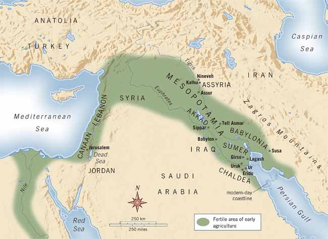
อารยธรรมเมโสโปเตเมีย (Mesopotamia) ถือว่าเป็น “แหล่งอารยธรรมแรกของโลก" ในช่วงปี 3,200-539 B.C. อยู่บริเวณลุ่มแม่น้ำไทกริส (Tigris) และแม่นํ้ายูเฟรติส (Euphrates) ซึ่งปัจจุบันคือประเทศอิรัก ถูกเรียกว่า “ดินแดนพระจันทร์เสี้ยว” เนื่องจาก บริเวณอาณาเขตที่คล้ายรูปจันทร์เสี้ยว มีอาณาจักรต่าง ๆ ผลัดกันขึ้นมาอิทธิพล ได้แก่ สุเมเรียน บาบิโลเนีย อัสซีเรีย และดาลเดียล ครอบคลุมดินแดนบางส่วนในประเทศอิรักและซีเรียในปัจจุบัน
สุเมเรียน 3200-2300 В.С.
ชาวสุเมเรียนเป็นชนเผ่าแรกที่ครอบครองดินแดนเมโสโปเตเมีย โดยก่อตั้งอาณาจักรซูเมอร์ Sumer หรือสุเมเรีย Sumeria เมื่อประมาณ 3200-2300 В.С. ประดิษฐ์อักษรที่เก่าแก่ที่สุดของโลก คืออักษรคูนิฟอร์ม (Cuneiform) หรืออักษรลิ่ม มีสิ่งก่อสร้างขนาดใหญ่ก่อด้วยอิฐดินเผา เรียกว่า ซิกกูแรต Ziggurat มีการจัดตั้งเป็นนครรัฐ เกิดคณิตศาสตร์ นับวันเดือนปีแบบจันทรคติ สังเกตดวงจันทร์ เกิดวรรณกรรมที่บันทึกไว้บนแผ่นดินเหนียว คือมหากาพย์กิลกาเมซ แป้นหรือจานหมุน สำหรับใช้ปั้นภาชนะดินเผา ถือเป็นเครื่องกลชิ้นแรกของโลก
บาบิโลเนีย 2000-1600 В.С.
ก่อตั้งโดยพวกอะมอไรด์ Amorite ซึ่งเป็นชนเผ่าเร่ร่อนเข้า ยึดครองดินแดนของชาวสุเมเรียน และตั้งเป็นอาณาจักรบาบิโลเนีย ประมวลกฎหมายฮัมมูราบี The Code of Hammurabi จารึกบนแผ่นศิลา ยึดหลัก “ตาต่อตา ฟันต่อฟัน” มีศูนย์กลางอยู่ที่เมืองบาบิโลน Babylon การปกครองแบบรวมศูนย์ที่ส่วนกลาง เสื่อมอำนาจ เมื่อชนเผ่าฮิตไทต์ Hittite ซึ่งเป็น พวกอินโด-ยูโรเปียน มีความสามารถ ในการรบโดยใช้เหล็กทำอาวุธและใช้ รถศึกเทียมม้า เข้าปล้นสะดมกรุงบาบิโลน เมื่อประมาณ 1590 B.C. มีการเก็บภาษีอากร เกณฑ์ทหาร และควบคุมการค้า
อัสซีเรีย 800-611 В.С.
ชาวอัสซีเรียนเป็นนักรบที่กล้าหาญและใช้อาวุธทําด้วยเหล็ก อย่างมีประสิทธิภาพ ได้เข้ายึดครองกรุงบาบิโลน และดินแดนเมโสโปเตเมีย รวมทั้งอียิปต์ตอนบน เมืองหลวงอยู่ที่เมืองนิเนเวห์ Nineveh การแกะสลักภาพนูนต่ำ Base-relief ลงบนแผ่นหินดินเหนียว เป็นภาพการดำเนินชีวิตประจําวัน การล่าสัตว์ การทำสงคราม ความเชื่อเรื่องกษัตริย์เป็นสมมติเทพ สร้างวังใหญ่โต เกิดหอสมุดแรกของโลกอยู่ที่เมืองนิเนเวห์ Nineveh
คาลเดียน 612-539 В.С.
เข้ายึดเมืองนิเนเวห์ได้สำเร็จ และก่อตั้งอาณาจักรบาบิโลเนียขึ้นใหม่อีกครั้ง จึงมักถูกเรียกว่าบาบิโลนใหม่ กำหนดให้สัปดาห์หนึ่งมี 7 วัน ว่ากันว่ามีการสร้างสวนลอยแห่งบาบิโลน Hanging Garden of Babylon ถูกยกย่องให้เป็นสิ่งมหัศจรรย์ของโลกสมัยโบราณ
สิ้นสุดอารยธรรม
539 B.C. อาณาจักรคาลเดียนถูกกองทัพเปอร์เซียตีแตกและผนวกรวมเข้าเป็นส่วนหนึ่งของจักรวรรดิเปอร์เซียในสมัยพระเจ้าไซรัสมหาราช ถือเป็นการสิ้นสุดยุคสมัยของแหล่งอารยธรรมเมโสโปเตเมีย
อารยธรรมอียิปต์
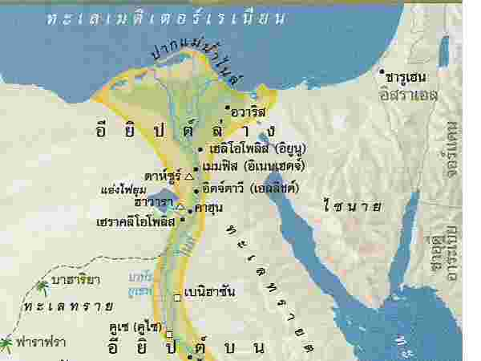
อารยธรรมอียิปต์ตั้งอยู่บริเวณแม่น้ำไนล์ อารยธรรมนี้กำเนิดขึ้นเมื่อประมาณ 3,100 ปีก่อนคริสตกาล ถึง 940 ปีก่อนคริสตกาล โดยเริ่มนับตั้งแต่อียิปต์บนและอียิปต์ล่างถูกรวมกันภายใต้การปกครองของฟาโรห์นาร์เมอร์ (Narmer) ซึ่งถือเป็นฟาโรห์พระองค์แรกของอียิปต์โบราณ ในช่วงนี้ได้เริ่มการตั้งศูนย์กลางการปกครองที่นครเมมฟิส (Memphis) เหตุการณ์ดังกล่าวนับเป็นจุดเริ่มต้นของยุคสมัยการปกครองโดยราชวงศ์ของอียิปต์ โดยสามารถแบ่งแยกย่อยได้ อีก 4 ยุคสมัย คือ อาณาจักรเก่า อาณาจักรกลาง อาณาจักรใหม่ และสมัยภายใต้การปกครองของผู้รุกราน
ยุคสมัยของอารยธรรมอียิปต์
สมัยอาณาจักรเก่า (The Old Kingdom)
สมัยอาณาจักรเก่า 2,665 – 2,180 ปี ก่อนคริสกาล ช่วงราชวงศ์ที่ 3 – 6 สมัยนี้ถูกเรียกว่า “สมัยพีระมิด (The Pyramid Age)” เพราะเริ่มมีการสร้างพีระมิดเกิดขึ้นเป็นครั้งแรก พีระมิดแห่งแรกถูกสร้างโดย กษัตริย์โจเชอร์ ของราชวงศ์ที่ 3 ที่เมือง สควารา (Saqqara) และมีการพัฒนาขึ้นมาเรื่อย ๆ จนเกิดพีระมิดที่ใหญ่ที่สุดนั่นก็คือ พีระมิดของกษัตริย์คูฟู ที่ตั้งอยู่ที่เมือง กีซ่า (Giza) หรือที่ในปัจจุบันเรียกว่า มหาพีระมิดแห่งกีซ่า (The Great Pyramid of Giza) สมัยอาณาจักรเก่า ได้สิ้นสุดลงในราชวงศ์ที่ 6 เนื่องจากเกิดการแย่งชิงอำนาจของเหล่าขุนนาง
สมัยอาณาจักรกลาง (The Middle Kingdom)
สมัยอาณาจักรกลาง 2,050 – 1,786 ปี ก่อนคริสกาล ช่วงราชวงศ์ที่ 11 – 18 โดยกษัตริย์องค์สุดท้ายของราชวงศ์ที่ 11 ได้ปราบปรามขุนนาง และรวบรวมอียิปต์เข้าด้วยกันได้อีกครั้ง จากนั้นมีการฟื้นฟูบ้านเมือง แต่ต้องเสื่อมลงอีกครั้ง เป็นผลมาจากการแย่งชิงอำนาจเกิดขึ้นอีกครั้ง และถูกรุกรานจากศัตรูภายนอก จึงไม่สามารถรักษาดินแดนไว้ได้
สมัยอาณาจักรใหม่ (The New Kingdom)
สมัยอาณาจักรใหม่ และสมัยจักรวรรดิ 1,554 – 1,090 ปี ก่อนคริสกาล ช่วงราชวงศ์ที่ 18 – 20 ในสมัยนี้มีเมืองธีปต์เป็นเมืองหลวง และเกิดจักรวรรดิอียิปต์เป็นครั้งแรก เพราะกษัตริย์ในช่วงนี้มีความสามารถด้านการปกครอง การรบ จึงทำให้สามารถปราบศัตรู และเหล่ากบฏขุนนางให้หมดไปได้ ในสมัยนี้อียิปต์มีการขยายดินแดนมากขึ้น โดยมีหลักฐานทางประวัติศาสตร์ที่กล่าวถึงกษัตริย์ที่สำคัญของอียิปต์ในสมัยนี้ ดังนี้
อาโมส (Ahmose 1) ปฐมกัตริย์แห่งอณาจักรใหม่ เป็นผู้ก่อตั้งอาณาจักรใหม่ขึ้น เป็นผู้ขับไล่ศัตรู และกำจัดเหล่าขุนนางได้สำเร็จ ทัสโมสที่ 3 (Thutmose 3) ได้รับการยกย่องให้เป็นนโปเลียนแห่งอียิปต์ อเมนโฮเตปที่ 4 (Amenhotep 4) เป็นกษัตริย์นักปฏิรูปของอียิปต์ ตูตันคามุน (Tutankhamon) มีการย้ายเมืองหลวงกลับไปที่เมืองธีปส์ รามเซสที่ 2 (Ramses 2) ภายหลังการสิ้นพระชนม์ อียิปต์โบราณได้เสื่อมลง
สมัยภายใต้การปกครองของผู้รุกราน
สมัยภายใต้การปกครองของผู้รุกราน (The Period of Invasion) เป็นช่วง 940 ปีก่อนคริสตกาล เป็นต้นมา โดยในสมัยนี้อียิปต์ถูกปกครองจากชนภายนอกอียิปต์โบราณ และกินเวลาอย่างยาวนาน ถือว่าเป็นการสิ้นสุดอารยธรรมอียิปต์
ลิบยาน (Libyans) ปกครองระหว่าง 940 – 710 ปี ก่อนคริสกาล
เอธิโอเปียน (Ethiopians) ปกครองระหว่าง 736 – 657 ปี ก่อนคริสกาล
อัสซีเรียน (Assyrians) ปกครองระหว่าง664 – 525 ปี ก่อนคริสกาล
เปอร์เซียน (Persians) ปกครองระหว่าง 525 – 404 ปี ก่อนคริสกาล
ระหว่าง 404 – 341 ปี ก่อนคริสกาล ผู้นำอียิปต์ได้มาปกครองอียิปต์โบราณเองอีกครั้ง
เปอร์เซียน (Persians) ปกครองอีกครั้งระหว่าง 341 – 332 ปี ก่อนคริสกาล
กรีก (Greek) ปกครองระหว่าง 332 – 30 ปี ก่อนคริสกาล คลีโอพัตรา ปกครองอียิปต์ในยุคนี้
โรมัน (Romans) ปกครองระหว่าง 30 ปี ก่อนคริสกาล – ค.ศ. 395 นำโดยออกัสตัส
อารยธรรมกรีก
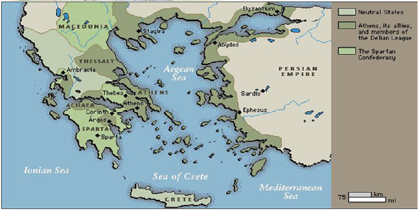
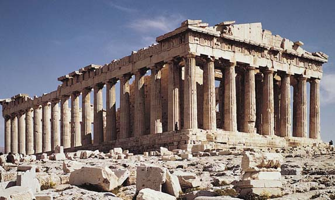
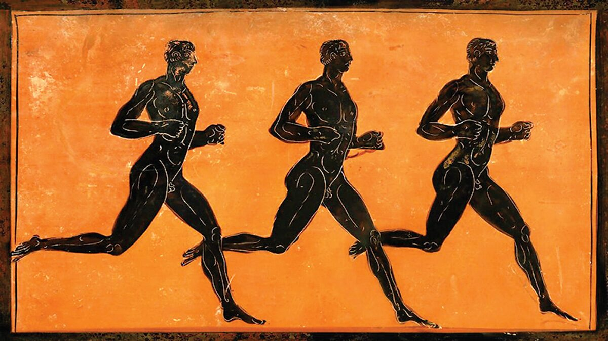
อารยธรรมที่มีแหล่งกำเนิดบริเวณตอนใต้ของคาบสมุทรบอลข่าน และทะเลอีเจียน ซึ่งเป็นศูนย์กลางสำคัญที่ครอบคลุมเมืองและรัฐต่าง ๆ ที่อยู่รอบ ๆ ทะเลอีเจียน เช่น เอเธนส์, สปาร์ตา และเกาะต่าง ๆ ในทะเลเมดิเตอร์เรเนียน ภูมิประเทศส่วนใหญ่เป็นภูเขาและมีแม่น้ำสายสั้น ๆ ขาดความอุดมสมบูรณ์ ซึ่งทำให้เมืองต่าง ๆ กระจายตัวและแยกกันอยู่เป็นนครรัฐ (City State) จึงไม่มีศูนย์กลางการปกครองที่ชัดเจนแบบรวมศูนย์ แต่เมืองเหล่านี้ยังคงมีวัฒนธรรมและภาษาแบบกรีกที่คล้ายคลึงกัน และใช้ศาสนารวมไปถึงเทศกาลต่าง ๆ ร่วมกัน ทำให้อารยธรรมกรีกเป็นลักษณะของการเชื่อมโยงกันทางวัฒนธรรมแม้จะอยู่แยกกัน โดยพื้นที่นี้เอื้อต่อการติดต่อค้าขายและการแลกเปลี่ยนวัฒนธรรมกับภูมิภาคอื่น ๆ ทำให้อารยธรรมกรีกพัฒนาอย่างรวดเร็วและมีอิทธิพลอย่างมากในเวลาต่อมา
ยุคของอารยธรรมกรีก
หลังจากสิ้นสุดยุคหลังอารยธรรมไมซีเนียน ราว 1200 ปีก่อนคริสตกาลสามารถแบ่งออกได้ 2 ช่วงสำคัญ ดังนี้
ยุคเฮเลนิก (Hellenic) หรือ ยุคคลาสสิก (Classical Age) 500 – 323 ปีก่อนคริสต์ศักราช คือ ยุคที่กรีกมีการพัฒนาในด้านปรัชญา ศิลปะ และการเมืองอย่างมาก รวมถึงการกำเนิดประชาธิปไตยในเอเธนส์
ยุคเฮเลนิสติก (Hellenistic) 323 – 31 ปีก่อนคริสต์ศักราช คือ ยุคหลังจากการขยายอำนาจของพระเจ้าอเล็กซานเดอร์มหาราช ซึ่งทำให้อารยธรรมกรีกผสมผสานเข้ากับวัฒนธรรมของภูมิภาคอื่น ๆ
ผลงานอารยธรรมกรีก
กรีกโบราณเป็นต้นกำเนิดของประชาธิปไตยในกรุงเอเธนส์ ซึ่งได้มีการพัฒนาแนวคิดเรื่องสิทธิและการมีส่วนร่วมในรัฐบาล ทำให้เกิดการปกครองแบบประชาธิปไตยขึ้นครั้งแรก ปรัชญาและวิทยาการ กรีกโบราณมีนักปราชญ์ที่มีชื่อเสียงมากมาย เช่น โสกราตีส (Socrates), เพลโต (Plato) และ อริสโตเติล (Aristotle) “มหากาพย์อีเลียด” (The Iliad) และ “โอดิสซีย์” (Odyssey) เป็นผลงานที่สำคัญของ โฮเมอร์ (Homer) นักกวีชาวกรีกโบราณ การแข่งขันกีฬาโอลิมปิก เกิดขึ้นเมื่อ 776 B.C. เป็นส่วนหนึ่งของการบูชาเทพเจ้า และกลายมาเป็นแรงบันดาลใจของการแข่งขันกีฬาสากลในปัจจุบัน
เทพเจ้าแห่งโอลิมปัส (Twelve Olympians) โดยเทพเจ้าที่สำคัญ ได้แก่ซูส (Zeus) เทพเจ้าแห่งสายฟ้าและผู้นำของเทพเจ้าในโอลิมปัสเฮรา (Hera) เทพีแห่งการแต่งงานและครอบครัว อะโพโล (Apollo) เทพเจ้าแห่งดวงอาทิตย์ ดนตรี การแพทย์ และการพยากรณ์ กรีกโบราณมีผลงานสร้างสรรค์ที่โดดเด่นในด้าน ศิลปะและสถาปัตยกรรม โดยเน้นความละเอียดอ่อนและความสมดุลในโครงสร้างและการออกแบบ รูปแบบสถาปัตยกรรมที่กรีกพัฒนาขึ้นมานั้นถูกแบ่งออกเป็นสไตล์เสาหลักสามแบบ ได้แก่ เสาแบบดอริก (Doric), ไอโอนิก (Ionic) และ คอรินเทียน (Corinthian)
อารยธรรมโรมัน
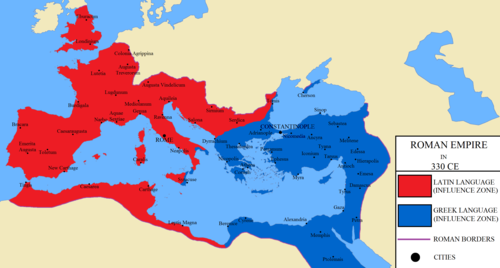
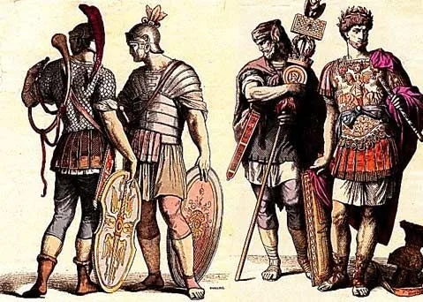
อารยธรรมโรมัน เกิดขึ้นจากการเข้ามาตั้งถิ่นฐานของชาวอิตาลิก(Italic) ในบริเวณริมแม่น้ำไทเบอร์ บนคาบสมุทรอิตาลี โดยหลังจากที่รบชนะชาวอีทรัสคัน (Etruscan) ซึ่งเป็นชนกลุ่มเดิมที่อาศัยในบริเวณนี้แล้วจึงได้ก่อตั้งอาณาจักรโรม และกรุงโรม เมื่อ 753 ปีก่อนคริสต์ศักราช ถึง 476 ปีก่อนคริสต์ศักราช
การปกครองและการเมือง
ระบอบสาธารณรัฐ: หลังจากการโค่นล้มระบอบกษัตริย์ในปี 509 ก่อนคริสต์ศักราช โรมเปลี่ยนเป็นระบบสาธารณรัฐ โดยมีการเลือกตั้งกงสุลและวุฒิสภา กฎหมายและหลักการปกครอง: โรมันพัฒนากฎหมายที่สำคัญ เช่น กฎหมายสิบสองโต๊ะ (Twelve Tables) และประมวลกฎหมายของจักรพรรดิจัสติเนียน (Corpus Juris Civilis) ซึ่งกลายเป็นรากฐานของกฎหมายในยุโรป
ยุคสมัยชองอารยธรรมโรมัน
แบ่งได้เป็น 3 ยุคใหญ่ ๆ ดังนี้
1. ยุคราชอาณาจักรโรมัน (753–509 ปีก่อนคริสตกาล)
กรุงโรมถูกก่อตั้งเมื่อ 753 ปีก่อนคริสต์ศักราช โดยตามตำนานกล่าวว่าเป็นการก่อตั้งโดยโรมุลุสและแรมุส 509 ปีก่อนคริสต์ศักราช ชาวโรมันได้โค่นล้มกษัตริย์องค์สุดท้ายของกรุงโรมคือ กษัตริย์ลูกิอุส ตาร์กวินิอุส ซุแปร์บุส เหตุการณ์นี้นำไปสู่การจัดตั้งระบบสาธารณรัฐ
2. ยุคสาธารณรัฐโรมัน (509–27 ปีก่อนคริสตกาล)
ยุคสาธารณรัฐโรมันเป็นช่วงเวลาที่เต็มไปด้วยการเปลี่ยนแปลงทางการเมือง การขยายอาณาเขต และความขัดแย้งภายใน ซึ่งส่งผลต่อวิวัฒนาการของอารยธรรมโรมันในอนาคต บุคคลสำคัญ คือ จูเลียส ซีซาร์ (Julius Caesar)
3. ยุคจักรวรรดิโรมัน (27 ปีก่อนคริสตกาล–ค.ศ. 476)
จักรพรรดิเอากุสตุส (Augustus) ได้สถาปนาตัวเป็นจักรพรรดิองค์แรก เมื่อ 27 ปีก่อนคริสต์ศักราช นำไปสู่ระบอบอัตตาธิปไตย จักรวรรดิโรมันตะวันตกเริ่มเสื่อมโทรมในคริสต์ศตวรรษที่ 3 เนื่องจากความขัดแย้งภายใน การรุกรานจากชนเผ่าต่าง ๆ และวิกฤติทางเศรษฐกิจ จนกระทั่งสิ้นสุดลงในปี ค.ศ. 476 เมื่อจักรพรรดิองค์สุดท้ายถูกขับไล่
ผลงานของอารยธรรมโรมัน
ศิลปะและสถาปัตยกรรมโรมันได้รับอิทธิพลจากกรีก โดยมีการปรับปรุงรูปแบบต่าง ๆ ให้เข้ากับวัฒนธรรมและความต้องการของชาวโรมัน การพัฒนาที่เป็นเอกลักษณ์ของตนเอง โดยศิลปะและสถาปัตยกรรมของโรมันที่โดดเด่น เช่น การใช้ซุ้มโค้ง (Arch)
โคลอสเซียม (Colosseum) สนามกีฬาใหญ่ที่สามารถจุผู้ชมได้ประมาณ 50,000 คน ใช้สำหรับจัดการแข่งขันกีฬาและการแสดงต่าง ๆ เป็นตัวอย่างของความสามารถทางสถาปัตยกรรมที่โดดเด่น ถือเป็น 1 ใน 7 สิ่งมหัศจรรย์ของโลกยุคใหม่
ภาษาละติน กลายเป็นภาษาพื้นฐานของหลายประเทศในยุโรป เช่น ฝรั่งเศส อิตาลี และสเปน
ชาวโรมันได้รับอิทธิพลจากเทพปกรณัมกรีก และมีการปรับเปลี่ยนชื่อและลักษณะของเทพเจ้า เช่น ซูส (Zeus) กลายเป็น จูปิเตอร์ (Jupiter), โพไซดอน (Poseidon) เป็น เนปจูน (Neptune), และอะธีนา (Athena) เป็น มิเนอร์วา (Minerva) เป็นต้น
อารยธรรมจีน
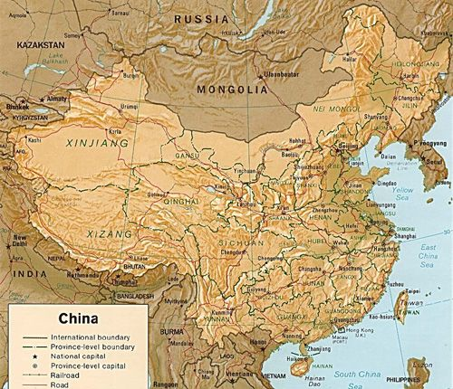
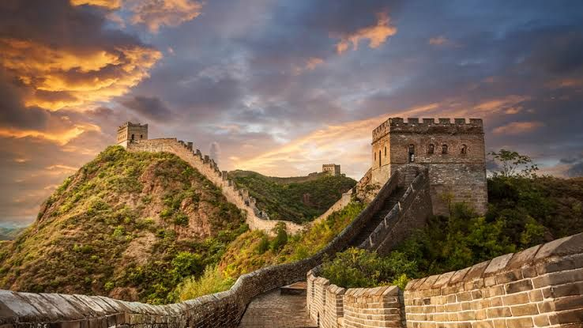
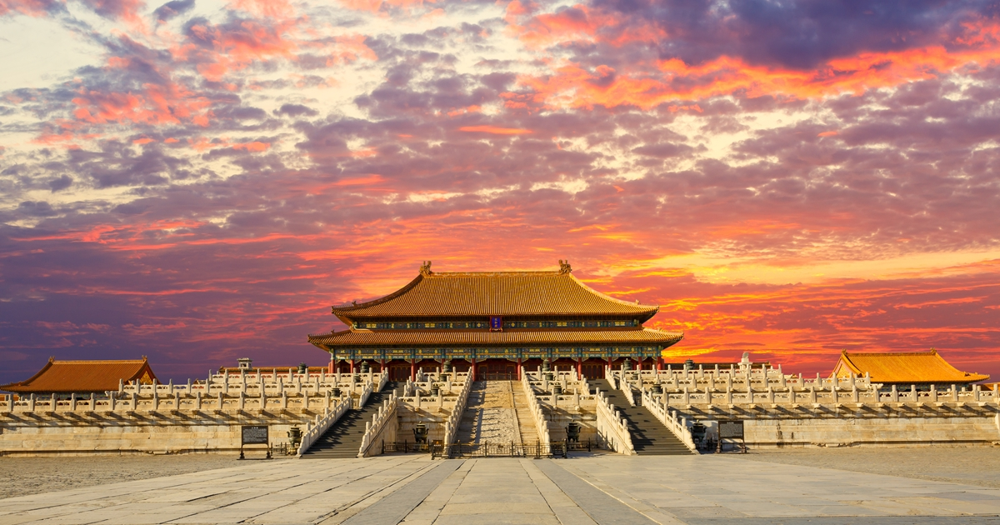
อารยธรรมจีนเริ่มยุคโบราณ ราว 2100 ก่อนคริสตกาล มีหลักฐานการตั้งถิ่นฐานก่อนหน้านั้นหลายพันปี
อารยธรรมจีนสมัยก่อนประวัติศาสตร์ มีแหล่งอารยธรรมที่สำคัญ 2 แหล่ง คือ
ลุ่มแม่น้ำฮวงโห วัฒนธรรมหยางเชา ( Yang Shao Culture ) พบหลักฐานที่เป็นเครื่องปั้นดินเผามีลักษณะสำคัญคือ เครื่องปั้นดินเผาเป็นลายเขียนสี มักเป็นลายเรขาคณิต พืช นก สัตว์ต่างๆ และพบใบหน้ามนุษย์ สีที่ใช้เป็นสีดำหรือสีม่วงเข้ม นอกจากนี้ยังมีการพิมพ์ลายหรือขูดสลักลายเป็นรูปลายจักสาน ลายเชือกทาบ
ลุ่มน้ำแยงซี ( Yangtze ) บริเวณมณฑลชานตุงพบวัฒนธรรมหลงซาน ( Lung Shan Culture ) พบหลักฐานที่เป็นเครื่องปั้นดินเผามีลักษณะสำคัญคือ เครื่องปั้นดินเผามีเนื้อละเอียดสีดำขัดมันเงา คุณภาพดีเนื้อบางและแกร่ง เป็นภาชนะ 3 ขา
ยุคสมัยของอารยธรรมจีน
สมัยประวัติศาสตร์ของจีนแบ่งได้ 4 ยุค
1. ประวัติศาสตร์สมัยโบราณ เริ่มตั้งแต่สมัยราชวงศ์ชาง สิ้นสุดสมัยราชวงศ์โจว
2. ประวัติศาสตร์สมัยจักรวรรดิ เริ่มตั้งแต่สมัยราชวงศ์จิ๋น จนถึงปลายราชวงศ์ชิงหรือเช็ง
3. ประวัติศาสตร์สมัยใหม่ เริ่มปลายราชวงศ์เช็งจนถึงการปฏิวัติเข้าสู่ระบอบสังคมนิยม
4. ประวัติศาสตร์ร่วมสมัย เริ่มตั้งแต่จีนปฏิวัติเปลี่ยนแปลงการปกครองเข้าสู่ระบอบสังคมนิยมหรือคอมมิวนิสต์จนถึงปัจจุบัน
ผลงานของอารยธรรมจีน
ลัทธิขงจื๊อ เป็นแนวคิดแบบอนุรักษ์นิยม เน้นความสัมพันธ์และการทำหน้าที่ของผู้คนในสังคม เน้นความกตัญญู ให้ความสำคัญกับครอบครัว เน้นความสำคัญของการศึกษา
ลัทธิเต๋า โดยเล่าจื๊อ เน้นการดำเนินชีวิตที่เรียบง่าย ไม่ต้องมีระเบียบแบบแผนพิธีรีตองใดใด เน้นปรับตัวเข้าหาธรรมชาติ คำสอนทั้งสองลัทธิเป็นที่พึ่งทางใจของผู้คน
สุสานจิ๋นซีหวงตี้ (จิ๋นซีฮ่องเต้) ที่ถูกสร้างขึ้นเพื่อเป็นที่ฝังพระศพและเป็นที่ประทับในปรโลก พร้อมด้วยกองทัพทหารดินเผา เพื่อปกป้องและติดตามพระองค์ในโลกหน้
วรรณะกรรมสำคัญคือ สามก๊ก ซ้องกั๋ง ไซอิ๋ว บันทึกประวัติศาสตร์ ของ สื่อหม่าเฉียน
กำแพงเมืองจีนเป็นกำแพงที่มีป้อมคั่นเป็นช่วง ๆ ของจีนสมัยโบราณ กำแพงส่วนใหญ่ที่ปรากฏในปัจจุบันสร้างขึ้นในสมัย ราชวงศ์ฉิน ทั้งนี้เพื่อป้องกันการบุกรุกจาก ชาวฮัน
อารยธรรมอินเดีย
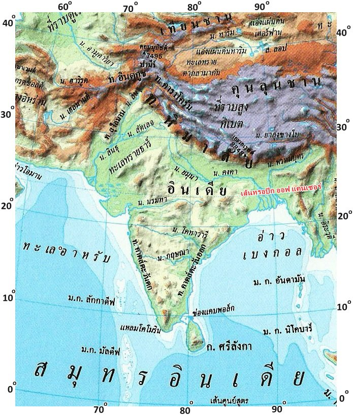
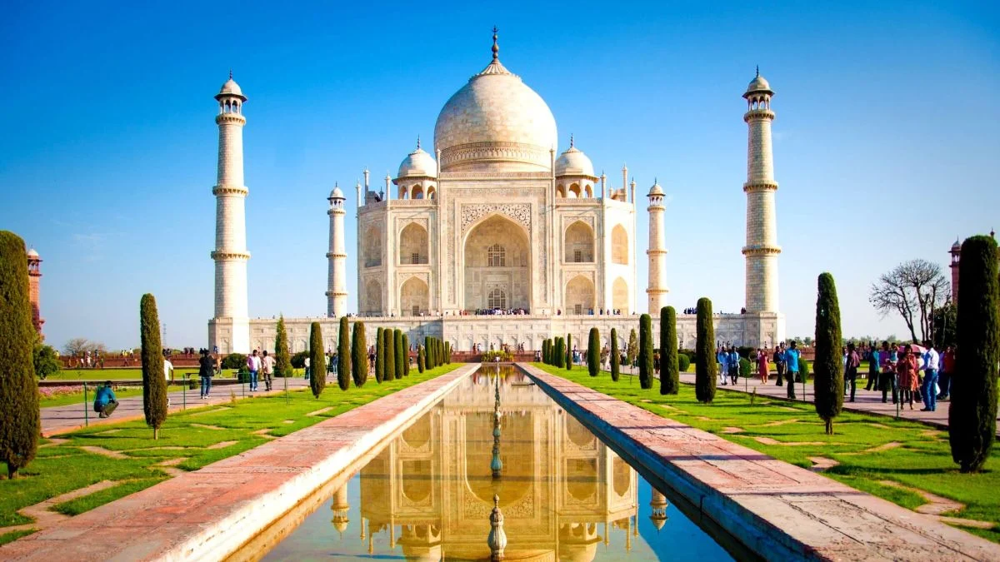
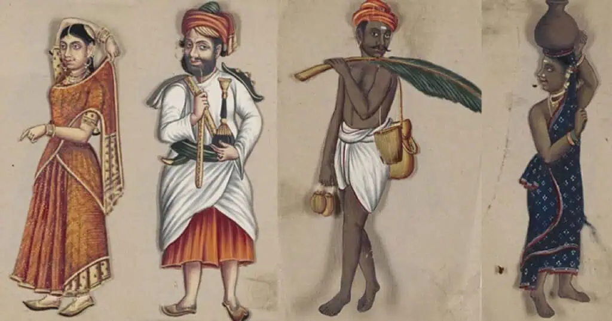